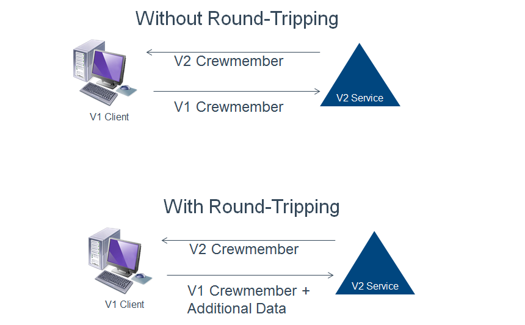

Tag: services
Microservices Presentation
Posted by bsstahl on 2017-05-06 and Filed Under: event
The slide deck for my presentation “Examples of Microservice Architectures” can be found here.
There isn't one clear answer to the question "what does a micro-service architecture look like?" so it can be very enlightening to see some existing implementations. In this presentation, we will look at 2 different applications that would not traditionally be thought of as candidates for a service-oriented approach. We'll look at how they were implemented and what benefits the micro-services architecture brought to the table for each application.
Tags: coding-practices community conference development presentation services soa microservices
Simplify Your API
Posted by bsstahl on 2015-10-12 and Filed Under: development
If you are building an API for other Developers to use, you will find out two things very quickly:
- Developers don't read documentation (you probably already know this).
- If your API depends on its documentation to get developers to understand and discover its features, it is likely that it will not be used.
Fortunately, there are some simple mechanisms for wrapping complex APIs and making their functionality both easy to use, and highly discoverable. An API that uses tools like IntelliSense in Visual Studio to make its features discoverable by the downstream developer is far more likely to be adopted then one that doesn't. In recent years, additions to the C# language have made creating a Domain Specific Language that uses a fluent syntax for nearly any API into a simple process.
Create the Context
The 1st step in simplifying any API is to provide a single starting point for the downstream developer to interact with. In most cases, the best practice is to use the façade pattern to define a context that holds our entity collections. Each collection of entities becomes a property on the context object. These properties all return an IQueryable<Entity>. For example, in the EnumerableStack demo solution on GitHub (https://github.com/bsstahl/SimpleAPI), I created an object Bss.EnumerableStack.Data.EnumerableStack to provide this functionality. It has two properties, Posts and Questions, each of which returns an IQueryable<Post>. It is these properties that will be used to access the data from our API.
The context object, on top of becoming the single point of entry for downstream developers, also hides any complexities in the construction logic of the underlying data source. That is, if there is any configuration or other setup required to access the upstream data provider (such as web service access or database connections), much of the complexity of that construction can be hidden from the API user. A good example of this can be seen in the FluentStack demo solution from the same GitHub repository. There, the Bss.FluentStack.Data.OData.FluentStack context object wraps the functionality of constructing the connection to the StackOverflow OData web service.
Extend Our Language
Now that we have data to access, it's time for us to extend our domain specific language to provide tools to make accessing this data simpler for the API caller. We can use Extension methods on IQueryable<Entity> to create custom filters for our data. By creating extension methods that accept IQueryable<Entity> as a parameter and return the same, we can create methods that can be chained together to form a fluent syntax that will perform complex filtering. For example, in the EnumerableStack solution , the Questions, WithAcceptedAnswer and TaggedWith methods found in the Bss.EnumerableStack.Data.Extensions module, can all be used to execute queries on the data exposed by the properties of our context object, as shown below:
var results = new EnumerableStack().Posts.WithAcceptedAnswer().TaggedWith("odata");
In this case, both the WithAcceptedAnswer and TaggedWith filters are applied to the data. The best part about these methods are that they are visible in Intellisense (once the namespace has been brought into scope with a Using statement) making the functionality easy to discover and use.
Another big advantage of creating these extension methods is that they can hide the complexity of the lower level API. Here, the WithAcceptedAnswer method is wrapping a where clause that filters for those posts that have an AcceptedAnswerId property that is non-null. It may not be obvious to a downstream API consumer that the definition of a post with an "accepted answer" is one where the AcceptedAnswerId has a value. Our API hides that implementation detail and allows the consumer to simply request what is needed. Similarly, the TaggedWith method hides the fact that the StackOverflow API stores tags in lower-case, within angle-brackets, and with all tags on a post joined into a single string. To search for tags, the consumer would need to know this, and take all appropriate actions when searching for a tag if we didn't hide that complexity in the TaggedWith method.
Simplify Query Predicates
A predicate is a function that accepts an entity as a parameter, and returns a boolean value. These functions are often used in the Where clause of a query to indicate which objects should be included in the result set. For example, in the query below
var results = new EnumerableStack().Posts.Where(p => p.Parent == null);
the function expression p => p.Parent == null is a predicate that returns true if the Parent property of the entity is null. For each entity passed to the function, the value of that property is tested, and if null, the entity is included in the results of the query. Here we are using a Lambda Expression to provide a delegate to our function. One of the coolest things about Linq is that we can now represent this expression in a variable of type Expression<Func<Entity, bool>>, that is, a Lambda expression of a function that takes an Entity and returns a boolean. This is pretty awesome because if we can store it in a variable, we can pass it around and enable extension methods like this one, as found in the Asked class of the Bss.EnumerableStack.Data library:
public static Expression<Func<Post, bool>> InLast(TimeSpan span)
{
return p => p.CreationDate > DateTime.UtcNow.Subtract(span);
}
This method accepts a TimeSpan object and returns the Lambda Expression type useable as a predicate. The input TimeSpan is subtracted from the current DateTime UTC value, and compared to the CreationDate property of a Post entity. If the creation date of the Post is later than 30-days prior to the current date, the function returns true. Since this InLast method is static on a class called Asked, we can use it like this:
var results = new EnumerableStack().Questions.Where(Asked.InLast(TimeSpan.FromDays(30));
Which will return questions that were asked in the last 30 days. This becomes even simpler to understand if we add a method extending Int called Days that returns a Timespan, like this:
public static TimeSpan Days(this int value)
{
return TimeSpan.FromDays(value);
}
allowing our expression to become:
var results = new EnumerableStack().Questions.Where(Asked.InLast(30.Days());
Walking through the Process
In my conference sessions, Simplify Your API: Creating Maintainable and Discoverable Code, I walk through this process on the FluentStack demo code. We take a query created against the StackOverflow OData API that starts off looking like this:
var questions = new StackOverflowService.Entities(new Uri(_serviceRoot))
.Posts.Where(p => p.Parent == null && p.AcceptedAnswerId != null
&& p.CreationDate > DateTime.UtcNow.Subtract(TimeSpan.FromDays(30))
&& p.Tags.Contains("<odata>"));
and convert it, one step at a time, to this:
var questions = new FluentStack().Questions.WithAcceptedAnswer()
.Where(Asked.InLast(30.Days)).TaggedWith("odata");
a query that is much simpler, easier to understand, easier to create and easier to maintain. The sample code on GitHub, referenced above, and available at https://github.com/bsstahl/SimpleAPI, contains the FluentStack.sln example which shows how to simplify an API created with an OData source. It also contains the EnumerableStack.sln project which walks through the same process on a purely enumerable data source, that is, an implementation that will work with any collection.
Sound Off
Have you used these tools to simplify an API for downstream programmers? Do you have other techniques that you use to do the same, similar, or additional things to make your APIs better? If so, send it to me @bsstahl and let's keep the conversation going.
Tags: api coding-practices code sample development generics presentation services skill speaking visual studio soa
Two Features you Need in Your Service SLAs
Posted by bsstahl on 2014-09-22 and Filed Under: development
To allow ourselves to create the best possible services for our clients, it is important to make those services as flexible and maintainable as possible. Building services in an agile way helps us to create better services, however it makes it more likely that our service interface will, at some point, have to change. Changing a service interface after publication is, and should be, a well gated, well thought-out process. By changing the interface, you are changing the contract your service has with all of your clients, and you are probably requiring every one of the service consumers to change. This should not be done lightly. However, there are a few things that can be done to minimize the impacts of these changes. Several of these things require agreements with the clients up front. As a result, these items should be included in the Service Level Agreement (SLA) between the service providers and the consumers.
Caveat: I am a solution architect, not an expert in creating service level agreements. Typically, my only involvement with SLAs is to object when I can’t get what I need in one from a service provider. My intent here is to call-out a few things that all service providers should include in their SLAs to maintain the flexibility of their APIs. There are many other things that should be included in any good SLA that I will not be discussing here.
The two items that I believe should be included in all service SLAs are the requirements that the clients support both Lax Versioning and Forward Compatible Contracts. Each of these items is discussed in some detail below.
Lax Versioning
Lax Versioning allows us to add new, optional members to the data contract of the service without that change being considered a breaking change. Some modern service frameworks provide this behavior by default and many of the changes we might make to a service fall into this category. By reducing the number of changes that are considered breaking, we can lessen the burden on our implementation teams, reducing coordination requirements with service consumers, and shortening time to market of these changes.
One of the major impacts that Lax Versioning has is that it requires us to either avoid schema validation altogether, or to use specially designed, versionable schemas to do our validation. I recommend avoiding schema validation wherever reasonable and possible.
Forward Compatible Contracts
Forward Compatible Contracts, also known as the Round-Tripping of Unknown Data, requires that the service round-trip any additional data it gets, but doesn’t understand, back to the client and that clients round-trip any additional data they get, but don’t understand, back to the server. This behavior reduces the coupling between client and server for changes that are covered by Lax Versioning, but need to retain the additional data throughout the call life-cycle.
For example, suppose we were version a contract such that we added an additional address type to an employee entity (V1 only has home address, V2 has home and work addresses). If we change the service to return the V2 employee prior to changing the client, the client will accept the additional (optional) address type because we have already required Lax Versioning, but it will not know what to do with the information. If a V1 client without round-tripping support sends that employee back to the server, the additional address type will not be included. If however, the V1 client supports this round-tripping behavior, it will still be unable to use the data in the additional address field, but will return it to the server if the entity is sent back in a subsequent call. These behaviors with a V1 client and a V2 service are shown in the diagram below.

If the same practice is used on the server side, then we can decouple the client and server from many implementation changes. Clients would be free to implement the new versions of contracts as soon as they are ready, without having to wait for the service to roll-out. Likewise, many changes at the service side could be made knowing that data sent down to the clients will not be lost when it is returned to the server.
Summary
Making changes to the contract of existing services is a process that has risk, and requires quite a bit of coordination with clients. Some of the risks and difficulties involved in the process can be mitigated by including just 2 requirements in the Service Level Agreements of our services. By requiring clients to implement Lax Versioning and making our contracts Forward Compatible, we can reduce the impact of some changes, and decouple others such that we significantly reduce the risk involved in making these changes, and improve our time-to-market for these deployments.
Tags: agile interface services sla soa
SOA–Beyond the Buzzwords
Posted by bsstahl on 2014-06-28 and Filed Under: event development
For those who saw my code camp presentation, “SOA – Beyond the Buzzwords”, you can find the slide deck here.
There is much more to building a Service Oriented Architecture than just creating services. SOA services can be much more difficult to build, requiring more analysis and design work up-front than a non-service-enabled system or a system that relies on CRUD-style data services. In this session, we will look at real-world examples of SOAs, examining what a good SOA might look like, what conditions present a good opportunity to use a Service Oriented Architecture, and how we can make the process more agile. We will also look at some practical tips to help make your services more extensible and maintainable.
For those who haven’t yet seen this presentation, I will be giving this session at several other code camps and user groups around the US between now and the end of the year. Keep an eye on my Speaking Engagements page to know where and when I will be presenting.
Tags: soa services presentation slides code camp
Dictionary of PDC ‘03 Terms
Posted by bsstahl on 2003-11-02 and Filed Under: event development
Instead of posting a summary of the last 2 days of the PDC, I decided to summarize the entire PDC as best I can by creating a glossary of terms. These terms came out of the PDC as either new, having a modified meaning, or greater importance than before.
WinFX – The code-name for the next generation of the .NET Framework. Key features of WinFX include Indigo, Avalon and WinFS.
Longhorn – The code-name for the next generation of Windows built on, and to work with, WinFX. Longhorn provides the user interface features of Avalon, the file-system improvements of WinFS, and the service support of Indigo.
Indigo – The code-name for a set of managed services in the .NET Framework created to support a unified coding structure for applications developed using the services model. In a very-real sense, Indigo makes the SOAP implementation available to all types of services, not just web services and unifies the three main development standards for architecting solutions using the services model, Web Services, .NET Remoting, and Enterprise Services, under one set of managed objects.
WinFS – Vast improvements in the Windows File System that take us closer to being able to view the file system as a relational database. The addition of extensible metadata schema on top of NTFS will allow users to view data in various ways without having to physically reorganize the data. For example, you could view documents by project first, then author, or author first, then project, without having to change the underlying structure of the file system. Currently, with folders, we can only choose one way or the other.
Avalon – The code-name for the next generation of graphics processing engines in Windows which, among many other things, will put much of the graphics processing burden where it belongs, in the GPU (graphics processing unit) rather than using standard CPU cycles. This will allow for vast improvements in application graphics without impacting performance.
Yukon – The code-name for the next generation of SQL Server. Yukon runs in-process with the Common Language Runtime allowing queries to be executed using any CLR language. Yukon also provides support for XQuery allowing procedures to return query results from XML data which was returned as a result of a T-SQL query. Yukon also provides full support for SQL Cache Invalidation (see below).
Whidbey – The code-name for the next generation of the Visual Studio.NET IDE. Whidbey provides developers with the language tools that help create applications that take advantage of the new features of WinFX and aid in the development of applications that utilize the Services Model (see below).
Orpheus – The code-name for the next generation of Visual Studio.NET after Whidbey.
Services Model – The design philosophy in which application tiers are divided into services by functionality. Often, these tiers are divided into Presentation Services, Business Services (Business Logic) and Data Services. Indigo is designed to support the creation and interaction of these services.
SQL Cache Invalidation – The interaction between SQL Server and ASP.NET that allows the database to invalidate HTML stored in the IIS cache when the data that the page is based on becomes stale. This ability exists, using new utilities from Microsoft at a table level from SQL Server versions 7 and 2000 and is available to the row level in SQL Server Yukon.